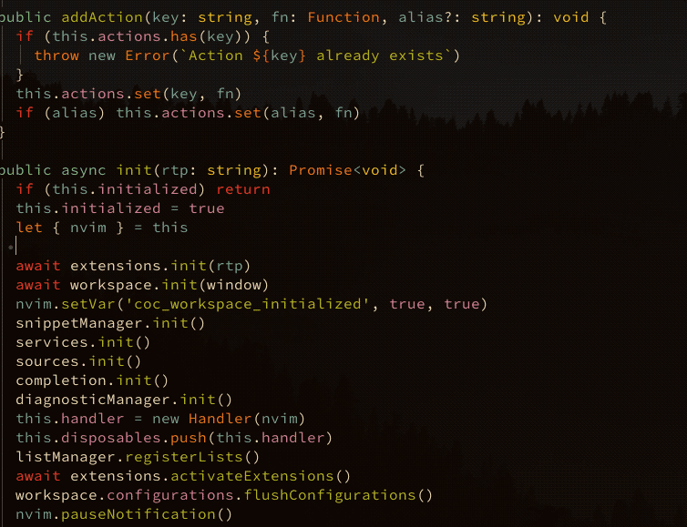

Posts by Jean-Pierre Chauvel
Exploring Python Performance: PyPy vs CPython vs Numba
- 13 May 2024
Python developers often face the decision of choosing between different implementations for their projects, especially when performance is a crucial factor. In this blog post, we delve into a comparative benchmarking study between PyPy, CPython, and Numba, focusing on calculating Pi value using a custom script.
Modernizing Vim: Transforming it into a Powerhouse IDE Comparable to VSCode!
- 29 April 2024

Creating Your Own Small Scale Application Server Using PubSub Pattern
- 24 April 2024
I recently had the idea to develop a small proof-of-concept application server using the built-in pub/sub functionality of Redis, and decided to get started on it.
The Heart of the 1980s Computing Revolution: The MOS 6502 Microprocessor
- 01 April 2024
In a deep dive into the technological past, we visit the cornerstone of the 1980s home computing revolution, the MOS 6502 microprocessor. This episode of The 8-Bit Guy not only explores the processor that powered numerous classic computers, arcade machines, and video game consoles but also brings insights from one of the chip’s original creators, Bill Mensch.
Calculating π with Numba
- 29 March 2024
Here is a version of the calculation of π using numba. Numba does just-in-time compilation from Python code and also supports parallelism. I was able to test calculate_pi() in the order of billions of iteretions and without consuming too much memory.
Building and Deploying a Blog with Sphinx, Ablog, and PyData Sphinx Theme
- 29 March 2024
Python is not only a powerful tool for data analysis and backend development – it’s also an excellent platform for content creators who want to share their ideas with the world. As a fellow Pythonista, I was determined to build a blog using Python-centric tools. That’s when I discovered a fantastic trio: Sphinx, Ablog, and the PyData Sphinx Theme. Here’s how to build your blog with these tools and deploy it on GitHub Pages with the power of GitHub Actions.